Koch method, copy and send training, a keyer for your real Morse key, realistic interference and games. Free, ad-free and open source. Koch-Methode, Hör- und Gebetraining, Keyer für deine echte Morsetaste, realistische Störungen und Spiele. Kostenlos, werbefrei und Open Source.
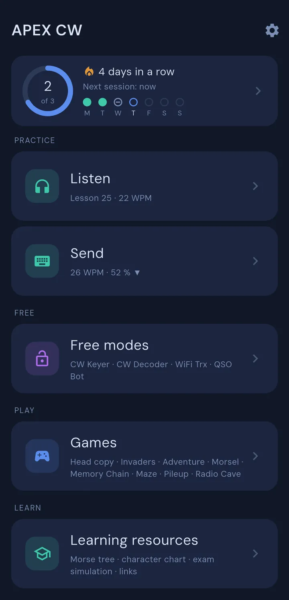
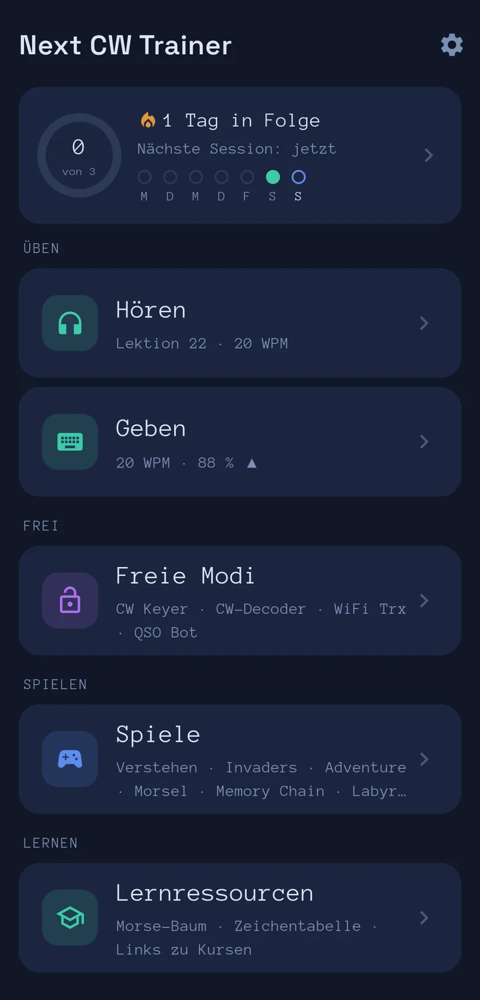
A small USB adapter turns the contacts of your paddle or straight key into key presses. The app takes it from there, with latency-free sidetone and live decoding. No adapter yet? The on-screen dit and dah keys work from the first minute. Ein kleiner USB-Adapter macht aus den Kontakten deiner Doppelpaddle oder Handtaste Tastendrücke. Den Rest übernimmt die App, mit latenzarmem Mithörton und Live-Dekodierung. Noch kein Adapter? Die Dit- und Dah-Tasten am Bildschirm funktionieren von der ersten Minute an.
Copy by ear, send it back, key freely, talk to a bot or other hams. Everything builds on the Koch method and stays in one place. Nach Gehör mitschreiben, zurückgeben, frei tasten, mit einem Bot oder anderen Funkamateuren sprechen. Alles baut auf der Koch-Methode auf und liegt an einem Ort.
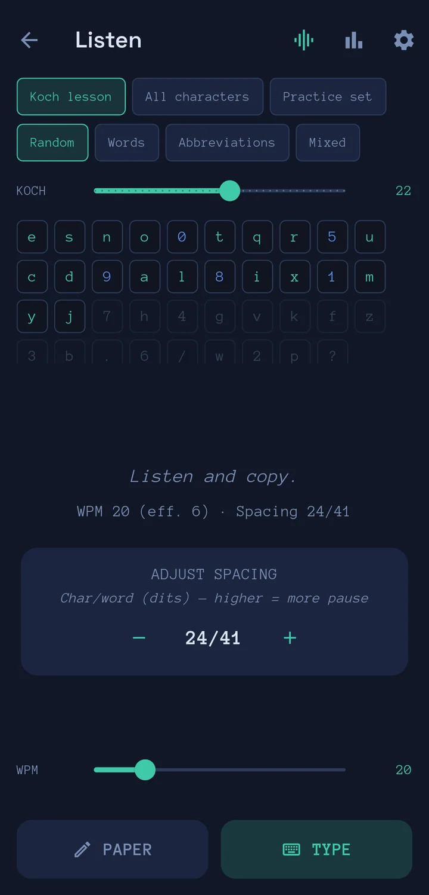
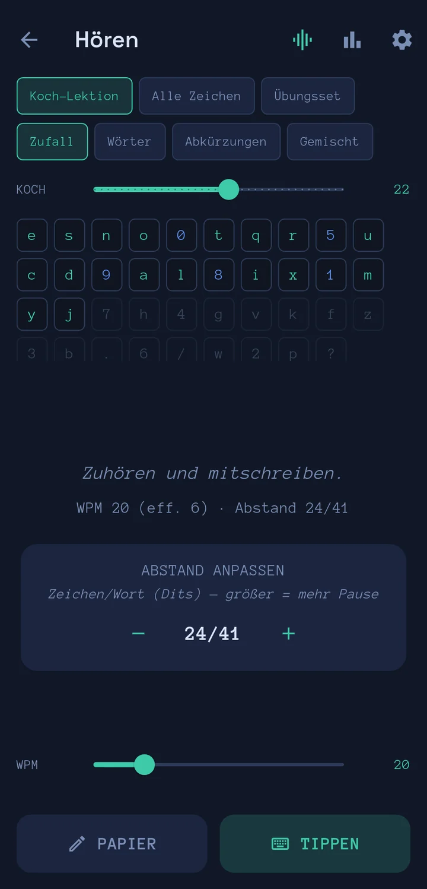
A perfect tone in a quiet room is easy. A weak station with fading, static and a neighbour two hundred hertz away is not. Switch the interference on and train for that. Ein perfekter Ton im stillen Zimmer ist einfach. Eine schwache Station mit Fading, Knacken und einem Nachbarn zweihundert Hertz daneben nicht. Schalte die Störungen ein und trainiere genau das.
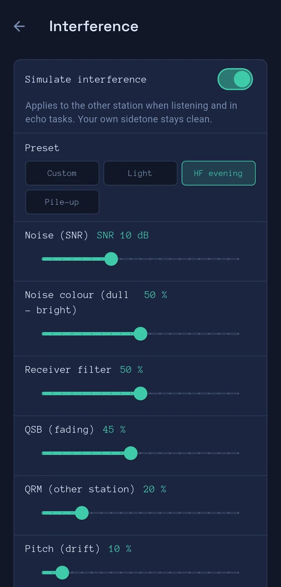
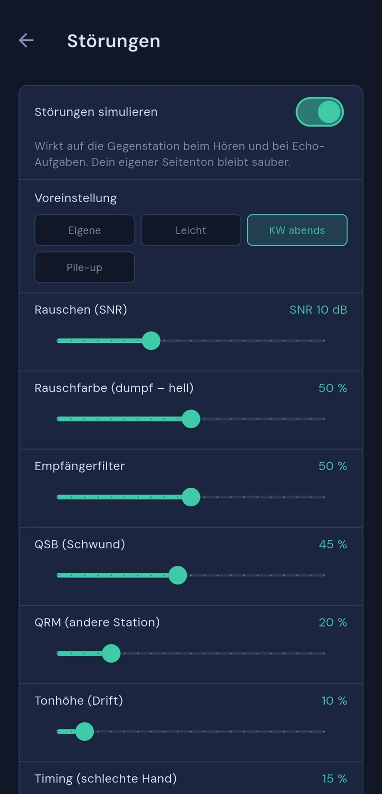
The app tracks your hit rate per character and per block. It tells you when the next Koch character is due, suggests spacing and speed, and brings your weak characters back. You accept or reject every suggestion. Die App misst deine Trefferquote pro Zeichen und pro Block. Sie sagt dir, wann das nächste Koch-Zeichen dran ist, schlägt Abstände und Tempo vor und bringt schwache Zeichen zurück. Jeden Vorschlag nimmst du an oder lehnst ihn ab.
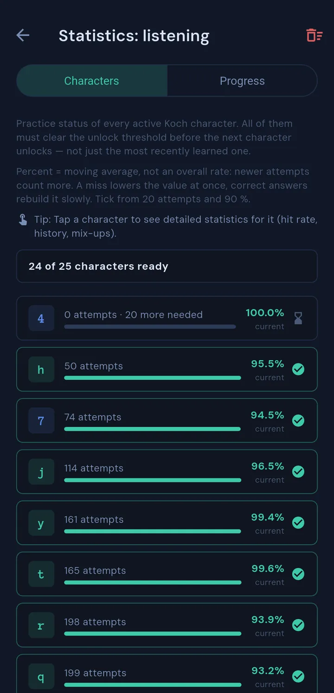
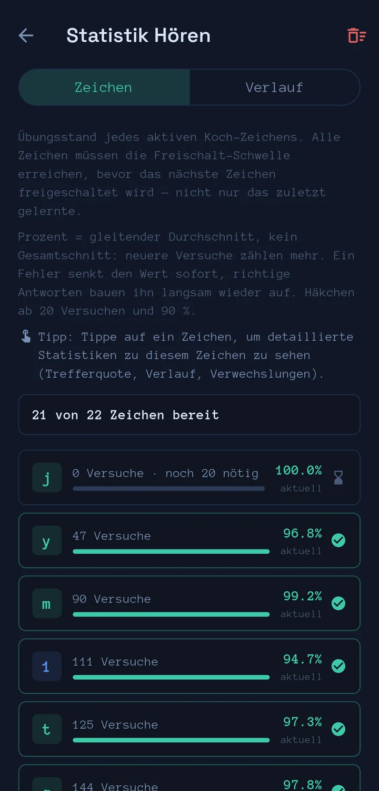
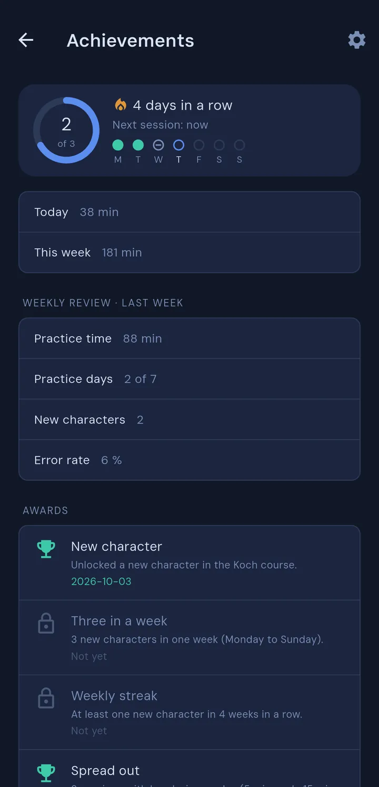
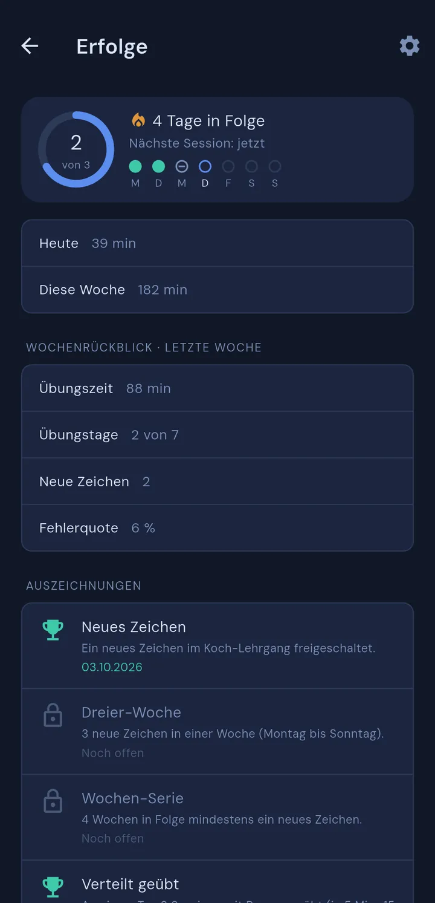
Set a daily goal and watch your streak grow. The app counts your active practice time, not the time the screen is on, and shows the week at a glance on the home screen.Setz dir ein Tagesziel und sieh deine Serie wachsen. Die App zählt deine aktive Übungszeit, nicht die Bildschirmzeit, und zeigt die Woche auf einen Blick auf dem Startbildschirm.
Games that train real skills, and some that are simply fun.Spiele, die echte Fähigkeiten trainieren, und manche, die einfach Spaß machen.
Real conversations are not copied letter by letter, they are understood. You hear Morse, write nothing down, and then answer questions. Three modes, each with three levels: Sentences (who, what, where, when), Q-groups (hear QTH or QRZ and pick what it means, with a cheat sheet) and Mini QSO (a short exchange between two stations: call signs, names, place, report). The text stays hidden until the result.Echte Gespräche schreibt man nicht Buchstabe für Buchstabe mit, man versteht sie. Du hörst Morse, schreibst nichts auf und beantwortest dann Fragen. Drei Modi mit je drei Stufen: Sätze (wer, was, wo, wann), Q-Gruppen (QTH oder QRZ hören und die Bedeutung wählen, mit Spickzettel) und Mini-QSO (ein kurzer Funkdialog zweier Stationen: Rufzeichen, Namen, Ort, Rapport). Der Text bleibt bis zum Ergebnis verborgen.
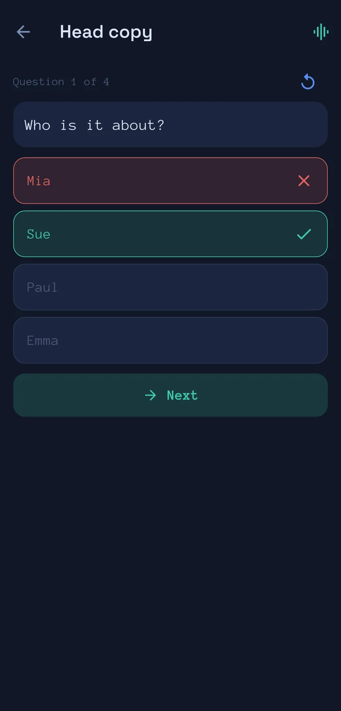
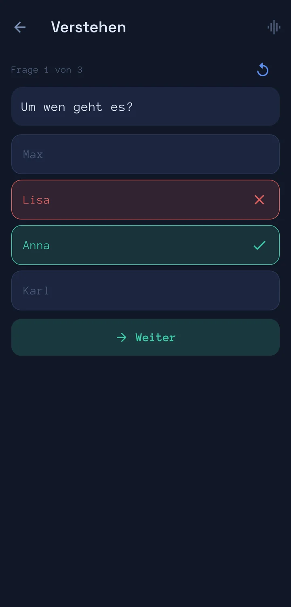
Zork I, II and III, the legendary text adventures, played entirely in CW. You hear what happens, key your command and explore the Great Underground Empire. It uses the full alphabet, digits and punctuation, so it trains all of it.Zork I, II und III, die legendären Textadventures, komplett in CW gespielt. Du hörst, was passiert, gibst deinen Befehl und erkundest das Große Unterirdische Imperium. Es nutzt das volle Alphabet samt Ziffern und Satzzeichen und trainiert damit alles.
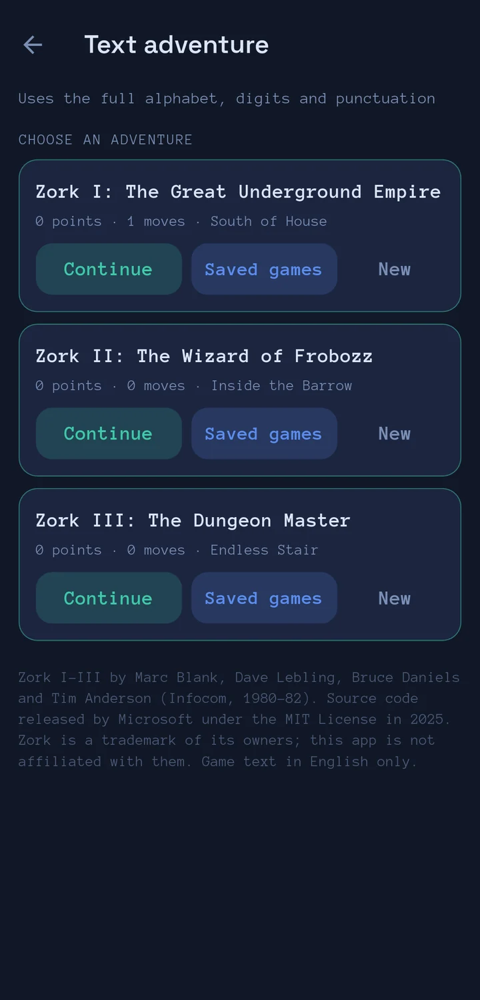
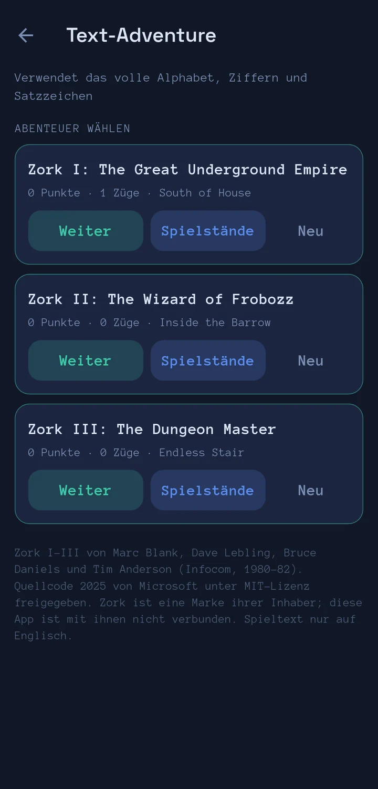
Shoot falling characters by keying them.Fallende Zeichen abschießen, indem du sie gibst.
Guess the word from CW, then key it back.Das Wort aus CW erraten und zurückgeben.
One more character each round. How long is your chain?Jede Runde ein Zeichen mehr. Wie lang wird deine Kette?
Follow a hidden path through a grid of characters: key the highlighted letter, or in Fox Hunt the direction you hear.Einem verborgenen Pfad durch ein Zeichen-Raster folgen: das markierte Zeichen geben, bei Fox Hunt die Richtung, die du hörst.
Copy a queue of calling stations and answer them before they give up. Radio Cave: a keyed text adventure in an abandoned radio station.Eine Schlange rufender Stationen mitlesen und beantworten, bevor sie aufgeben. Radio Cave: ein Textadventure in einer verlassenen Funkstation, jeder Befehl wird getastet.
Morse tree, character chart and links to courses.Morsebaum, Zeichentabelle und Links zu Kursen.
Whether you are learning your first characters or chasing contest speed, the app grows with you. And it keeps growing: it is under active development, with new features and improvements in release after release.Ob du deine ersten Zeichen lernst oder Contest-Tempo anstrebst, die App wächst mit dir. Und sie wächst weiter: Sie wird aktiv entwickelt, mit neuen Funktionen und Verbesserungen in Release nach Release.
Your ideas and bug reports shape what comes next. Tell us on GitHub.Deine Ideen und Fehlermeldungen bestimmen, was als Nächstes kommt. Schreib uns auf GitHub.
Koch lessons, slow character speed with generous spacing, copy by typing on a keyboard that offers only the characters you know.Koch-Lektionen, langsames Zeichentempo mit großzügigen Abständen, Mitschreiben auf einer Tastatur, die nur die Zeichen anbietet, die du kennst.
Words, abbreviations and call signs, the Echo Trainer, a bot for your first QSOs, and Head copy to understand instead of decode.Wörter, Abkürzungen und Rufzeichen, der Echo-Trainer, ein Bot für deine ersten QSOs und Verstehen, um nicht mehr zu entschlüsseln.
Contest QSOs, pile-ups, noise, fading and a neighbouring station, and your own key at your own speed.Contest-QSOs, Pile-ups, Rauschen, Fading und eine Nachbarstation, dazu deine eigene Taste in deinem Tempo.
Licensed under GPL-3.0-or-later. Your settings, progress and statistics stay on your phone. Read the code, report a bug or suggest a feature on GitHub. Lizenziert unter GPL-3.0-oder-später. Einstellungen, Fortschritt und Statistiken bleiben auf deinem Handy. Lies den Code, melde einen Fehler oder wünsch dir ein Feature auf GitHub.
View on GitHubAuf GitHub ansehen